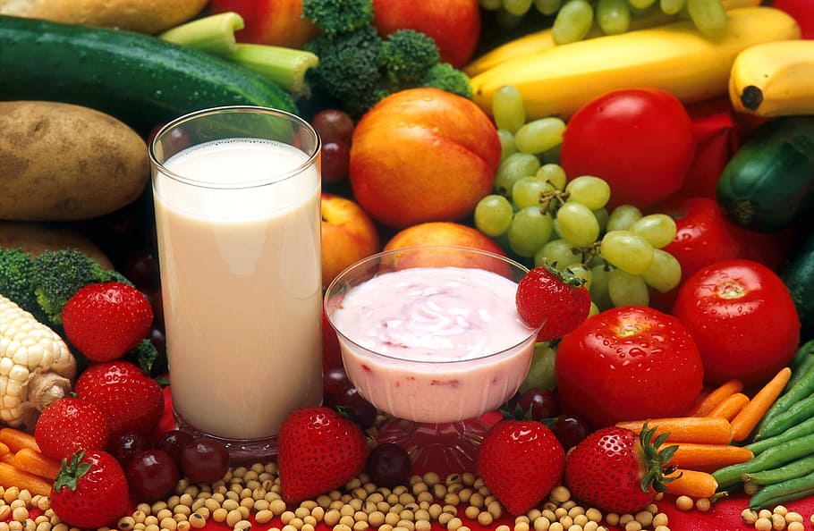
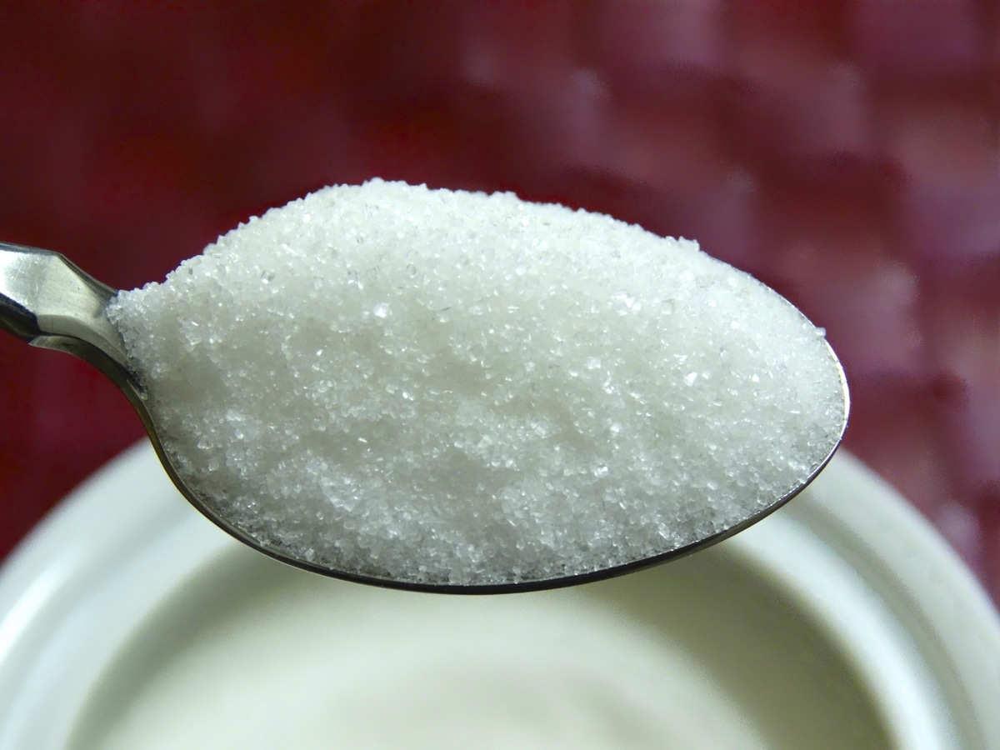
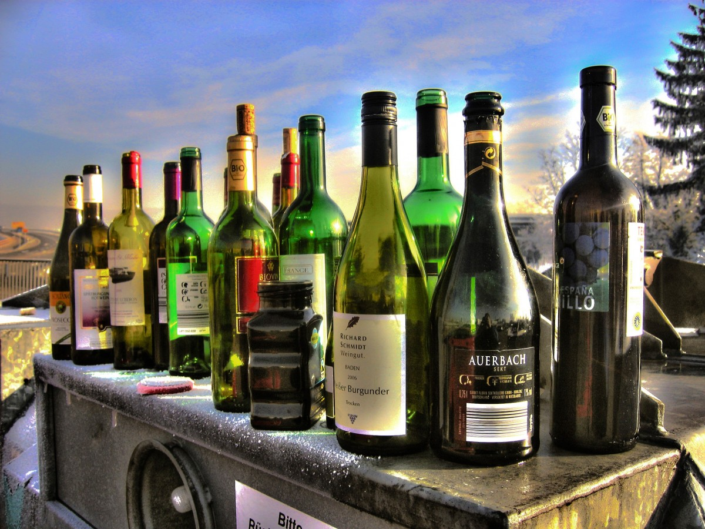
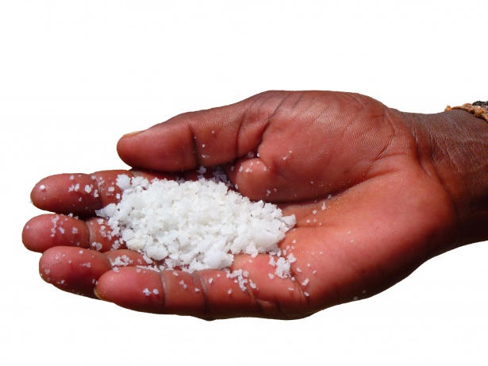

Eat more fruits and vegetables: Fruits and vegetables are rich in vitamins, minerals and fiber, which are good
for health.

Choose whole grains: Whole grain foods like whole wheat bread and brown rice contain more fiber and nutrients,
which can reduce disease risk.
Control fat intake: Avoid high-fat foods, especially saturated and trans fats, and choose low-fat options.
Increase protein intake: Protein is important for the body, choose lean meats, fish, beans and other
protein-rich foods.
Control sugar intake: Avoid high sugar diets, especially hidden sugars in processed foods and drinks.

Food diversity: Eat different types of foods to get a variety of nutrients for health.
Avoid excessive processed foods: Highly processed foods often contain many additives and sugars, which are
unhealthy.
Moderate alcohol intake: Excess alcohol can harm health, recommended to drink moderately or avoid alcohol.

Control salt intake: Reducing salt can lower risks of high blood pressure and other health issues.

Balanced meals: Having balanced meals 3 times a day can maintain normal body functioning.
Disclaimer
All pictures above use CC0 license, but some photo sources could not be identified. Apologies if any
copyright is infringed, and please provide photo sources if known.Learn MoreBack to Top


 Disclaimer
All pictures above use CC0 license, but some photo sources could not be identified. Apologies if any
copyright is infringed, and please provide photo sources if known.
Disclaimer
All pictures above use CC0 license, but some photo sources could not be identified. Apologies if any
copyright is infringed, and please provide photo sources if known.